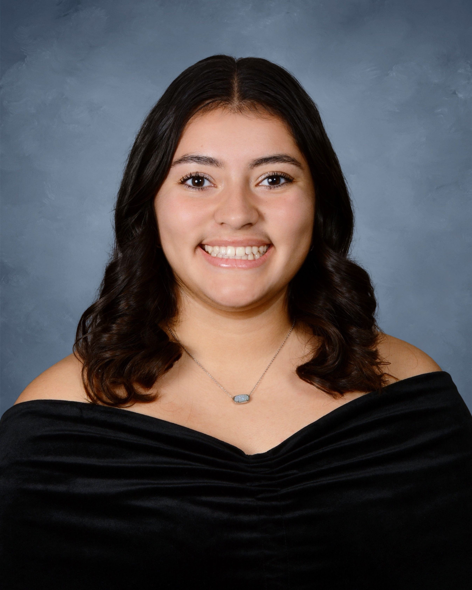

I am an economics student at William & Mary with interests in international trade, economic policy, and research-driven analysis. My work focuses on applying data analysis to understand global economic issues and inform policy decisions.